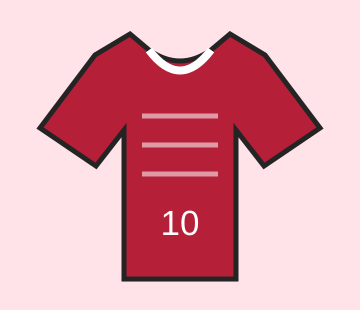

Bem-vindo à nossa loja!
A Manto da Torcida é uma loja fictícia especializada em camisas de clubes nacionais e internacionais. Nosso objetivo é oferecer opções para torcedores de diferentes times.
Temos modelos para usar nos jogos, passeios e encontros com amigos. Confira nosso catálogo e fale conosco caso tenha dúvidas sobre tamanhos e disponibilidade.
Conheça nossos produtos
- Camisas de clubes brasileiros
- Camisas de clubes internacionais
- Modelos masculinos e femininos
- Camisas retrô
Alguns modelos


Quer conhecer os valores? Veja nossa tabela de produtos.
Saiba mais sobre o esporte no site oficial da FIFA.